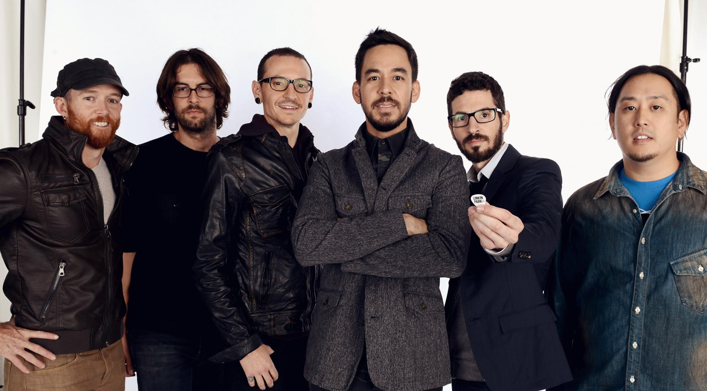

Banda estadounidense de rock alternativo procedente de Agoura Hills, California, formada en 1996.
| Año | Disco |
| 2000 | Hybrid Theory |
| 2003 | Meteora |
| 2007 | Minutes to Midnight |
| 2010 | A Thousand Suns |
| 2012 | Living Things |
| 2014 | The Hunting Party |
| 2017 | One More Light | "Meteora" es su álbum más exitoso. |